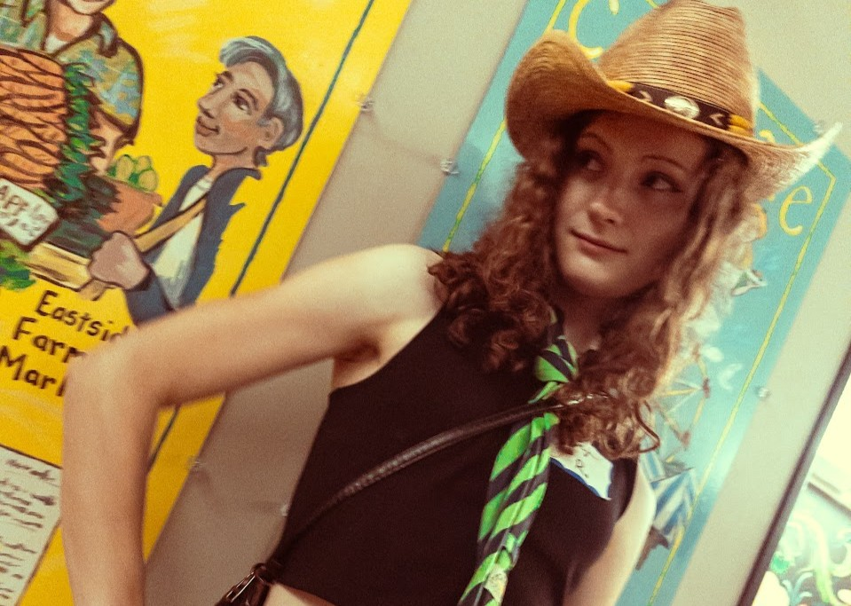
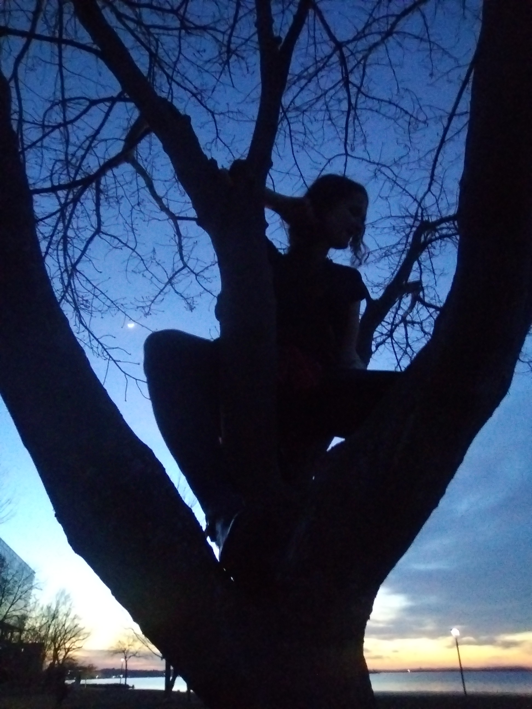

  <!-- CASEY -->
  <tr><td style="padding:10px 20px;">
    <table class="listing-table" cellpadding="0" cellspacing="0" id="casey">
      <tr><td class="listing-header-cell">
        <span class="ad-number">PERSONAL AD &numero; 005</span>
        <span class="listing-headline">&#127764; SUSPENDED DREAMER SEEKING SOMEONE WORTH LANDING FOR &#127764;</span>
      </td></tr>
      <tr><td class="copy-cell cf">
        <table class="photo-table" cellpadding="0" cellspacing="0">
          <tr><td></td></tr>
        </table>
        <h2 class="person-name-h2">Casey</h2>
        <div class="vitals">&gt; AGE: 23 &nbsp;&gt; SHE/HER &nbsp;&gt; HEIGHT: 5'7" &nbsp;&gt; LOCATION: MADISON WI</div>
      <div style="display:inline-block; background:#151e35; border:2px solid #3a5580; border-radius:4px; padding:4px 12px; margin:8px 0 12px; font-family:'Courier New',monospace; font-size:13px; font-weight:bold; color:#7eb8d4; letter-spacing:0.05em; letter-spacing:0.05em;">
        INTERESTED IN: &#9794; Men
      </div>
      <a href="https://instagram.com/caseyscooler" target="_blank" class="ig-btn"><span class="ig-icon">📷</span>@caseyscooler</a>
        <p class="copy-body">Casey <b style="color:#e8a87c;">sleeps suspended in the air</b>; in a hammock bed nest that is <i>totally secured</i>. She breaks into spontaneous dancing at random moments with zero warning and zero apology. She either sprints, bikes, or buses everywhere, and can cook <b>large portions of vegan food</b> in a way that commands respect.</p>
        <p class="copy-body">Warm enough to make strangers feel like old friends, witty enough to make you feel like you're always slightly missing the joke (in a fun way), and mysterious enough that you'll want to keep asking questions. <i style="color:#7ab892;">She moves through the world on her own frequency and it's a very good one.</i></p>
        <div class="intentions-box">
          <font color="#00ff00"><b>&#9658; INTENTIONS:</b></font> Friends first, always, and see where things go from there!<br><br>
          <font color="#00ff00"><b>&#9658; SEEKING:</b></font> Someone with their own thing going on. Doesn't need to match her vibe exactly; just needs to appreciate it. Dancers, advocates, and fellow lost adventurers welcome.
        </div>
        <div class="wants-box">
          <span class="wants-label">&#9658; CASEY WANTS TO KNOW:</span>
          Off the very top of your head, What is the most beautiful thing you've ever seen??? <b style="color:#e8a87c;"><i>Show me your heart so that I can eat it!</i></b>
        </div>
      <div class="review-outer">
        <div class="review-site-bar">
          <span class="review-site-dot" style="background:#ff4444;"></span>
          <span class="review-site-dot" style="background:#ffaa00;"></span>
          <span class="review-site-dot" style="background:#44cc44;"></span>
          &nbsp;<span class="review-site-url">hammocklife.com/profiles/casey-madison</span>
        </div>
        <div class="review-site-body">
          <div class="review-site-title">HammockLife&#8482; Magazine Online &rsaquo; Casey</div>
          <div class="review-stars">&#9733;&#9733;&#9733;&#9733;&#9733;</div>
          <div style="margin-top:6px;">We met on the bus and she gave me a pirate hat first thing and whisked me away to contra dancing. She wouldn't stop saying "yaar" and spinning me in a circle. We went back and made dinner, but she started beating me up because I made only two servings (at least ten!, she said). As I left she told me it was "nice knowing you... and I look forward to continuing to know you!" and pointed finger guns at me. Quite the experience.</div>
          <div class="review-author">&mdash; farmersmarketguy &bull; unexpected encounter &bull; 2026</div>
        </div>
      </div>
       <div style="display:flex; gap:12px; margin:16px 0 4px;">
       <div style="flex:1;"></div>
       <div style="flex:1;"></div>
       <div style="flex:1;"></div>
      </div>
      </td></tr>
    </table>
  </td></tr>
